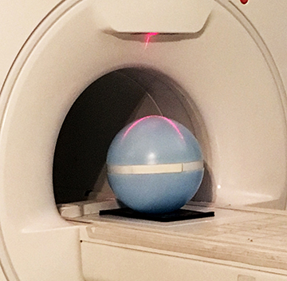
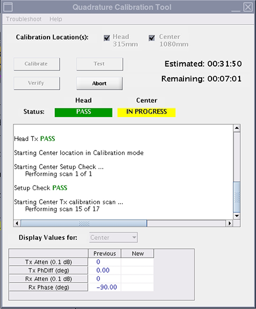

Calibrating for quadrature
Prerequisites
Procedure
- Go to Calibrations in the Common Service Desktop and start the Quadrature Calibration.note: For more information see, Quadrature Calibration Help.
- Set up the 31 cm blue sphere phantom in the head position on the universal phantom pad.
- Set the universe phantom pad at the 315 mm position (from home) on the table and align the white lines on the pad with the alignment lights.
- Put the sphere on the pad with the strap (in the groove) in the orientation shown below.
Figure 1. Sphere phantom position

- Landmark at the 315 mm position and then advance the phantom to scan.
- On the calibration tool, click Calibrate.
The tool does a set-up check before scanning begins to make sure the sphere is in the correct position. The text in the Quadrature Calibration Tool window tells you to adjust the sphere, if necessary. After the tool verifies the correct position of the sphere, the system starts the calibration scans. The tool window shows the status of the scans. When the head scans pass, the Place Phantom dialog box shows.
note: You must move the phantom to the next calibration location before you click OK in this dialog box. - Set up the phantom for the body scan as follows:
- Move pad and sphere to the 1080 mm position (from home) or I765 from the head position.
- Put the sphere back on the pad with the strap (in the groove) in the orientation shown in Figure 1.
- Do a landmark at this position and then advance to scan.
- Click OK on the Place Phantom dialog box.
The system does all transmit and receive scans for the center location.
Figure 2. Center tests in progress

- Calibrate all other table calibration combinations.When all the scans pass, the system is ready to use.